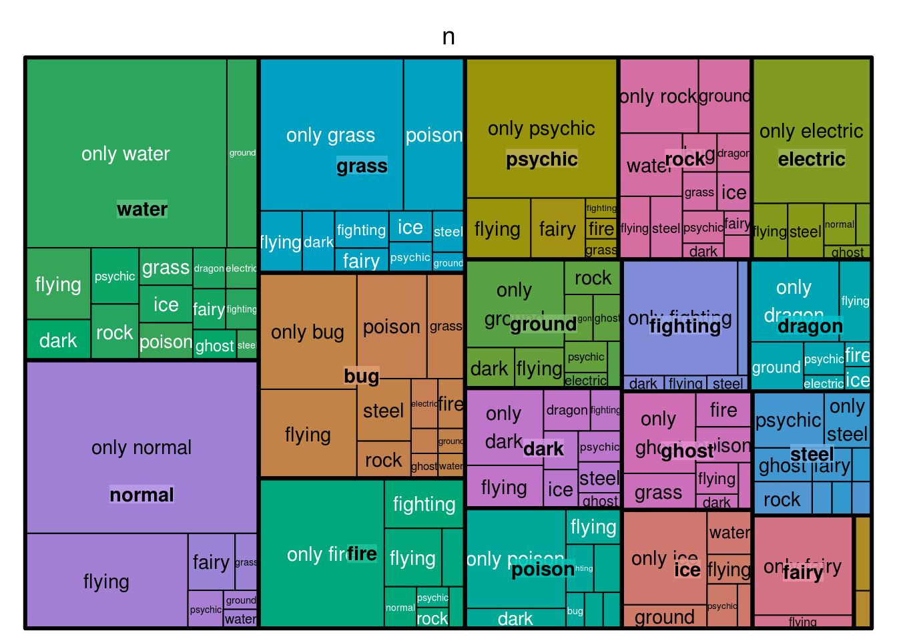

2.3 Highcharter
Highcharter je R omotač za Highcharts JavaScript bibiloteku. Paket koristi sintaksu nalik na ggplot2, uključujući opcije za rukovanje dugim i opširnim podacima. Postoje funkcije čije ponašanje je slično funkcijama ggplot2 paketa kao, što je hchart, koja radi kao ggplot, zatim hc_add_series radi kao geom_S i hcaes radi kao aes. Glavna razlika u geom_ funkcijama ggplot2-a i hc_add_series je u tome što moramo dodati podatke i estetiku eksplicitno u svakoj funkciji, dok u ggplot2 možemo ubaciti podatke i estetiku u sloj, a zatim dodati još geom_ funkcija koje mogu raditi na istim podacima i estetici.
Sada ćemo videti jedan jednostavni primer.
#install.packages("highcharter")
library(highcharter)## Highcharts (www.highcharts.com) is a Highsoft software product which is## not free for commercial and Governmental use##
## Attaching package: 'highcharter'## The following object is masked _by_ '.GlobalEnv':
##
## weather## The following object is masked from 'package:nycflights13':
##
## weather library(dplyr)##
## Attaching package: 'dplyr'## The following objects are masked from 'package:lubridate':
##
## intersect, setdiff, union## The following objects are masked from 'package:stats':
##
## filter, lag## The following objects are masked from 'package:base':
##
## intersect, setdiff, setequal, union##Posmatraćemo podatke o pokemonima koji se nalaze u pakovanju highcharter
##Prvo ćemo predstaviti preko bar chart-a ukupan broj iz svake kategorije type1, za to nam služi objekat type, koji smo podesili na "bar"
pokemon%>%
count(type_1)%>%
arrange(n)%>%
hchart(type = "bar", hcaes(x = type_1, y = n))##Takođe možemo istu stvar predstaviti i pomoću kolona
pokemon%>%
count(type_1)%>%
arrange(n)%>%
hchart(type = "column", hcaes(x = type_1, y = n))Sada ćemo iste podatke predstaviti preko treemap-e.
pokemon%>%
count(type_1)%>%
arrange(n)%>%
hchart(type = "treemap", hcaes(x = type_1, value = n, color = n))U narednom kodu predstavićemo procentualni odnos populacije svih kontinenata tokom godina
highchart() %>%
hc_chart(type = "area") %>% #tip highcharter-a
hc_title(text = "Historic and Estimated Worldwide Population Distribution by Region") %>% #naslov
hc_subtitle(text = "Source: Wikipedia.org") %>% #podnaslov
hc_xAxis(categories = c("1750", "1800", "1850", "1900", "1950", "1999", "2050"), #x-osa podeljena po godinama
tickmarkPlacement = "on")%>% #oznake tačkicama kod izlomljenih linija
hc_yAxis(title = list(text = "Percent")) %>%
hc_tooltip(pointFormat = "<span style=\"color:{series.color}\">{series.name}</span>:
<b>{point.percentage:.1f}%</b> ({point.y:,.0f} millions)<br/>",
shared = TRUE) %>% #tooltip koji prikazuje procenat i broj stanovnika za onu godinu na koju smo pokazali
hc_plotOptions(area = list(
stacking = "percent",
lineColor = "#ffffff",
lineWidth = 1,
marker = list(
lineWidth = 1,
lineColor = "#ffffff"
))
) %>%
hc_add_series(name = "Asia", data = c(502, 635, 809, 947, 1402, 3634, 5268)) %>%
hc_add_series(name = "Africa", data = c(106, 107, 111, 133, 221, 767, 1766)) %>%
hc_add_series(name = "Europe", data = c(163, 203, 276, 408, 547, 729, 628)) %>%
hc_add_series(name = "America", data = c(18, 31, 54, 156, 339, 818, 1201)) %>%
hc_add_series(name = "Oceania", data = c(2, 2, 2, 6, 13, 30, 46)) #odnos u procentima pri svakoj izabranoj godiniSada ponovo posmatramo bazu podataka mpg i pravimo sledeći grafik
data(mpg, package = "ggplot2")
mpgg <- mpg %>%
filter(class %in% c("suv", "compact", "midsize")) %>%
group_by(class, manufacturer) %>%
summarize(count = n()) #izdvojili smo tri klase i sabrali ukupan broj automobila po proizvođaču u svakoj klasi
categories_grouped <- mpgg %>%
group_by(name = class) %>% #grupišemo u tri klase koje smo gore izdvojili
do(categories = .$manufacturer) %>%
list_parse()
#navodimo proizvođače za svaku od klasa i funkcijom list_parse() raščlanimo listu
highchart() %>%
hc_xAxis(categories = categories_grouped) %>%
hc_add_series(data = mpgg, type = "bar", hcaes(y = count, color = manufacturer),
showInLegend = FALSE)Sada ćemo pomoću treemap-e da podelimo pokemone prvo po tipu 1, zatim svaku tu kategoriju da podelimo na podkategorije prema tipu 2, pri čemu postoje pokemoni koji nemaju tip 2
tm <- pokemon %>%
mutate(type_2 = ifelse(is.na(type_2), paste("only", type_1), type_2),
type_1 = type_1) %>% #za sve pokemone koji nemaju tip 2, stavićemo ih u kategoriju "only" tip 1
group_by(type_1, type_2) %>%
summarise(n = n()) %>%
ungroup() %>%
treemap::treemap(index = c("type_1", "type_2"),
vSize = "n", vColor = "type_1") #boja i veličina pravougaonika je podešena u odnosu na tip1 kom pripadaju i broju pokemona koja pripada tom tipu
Sada pomoću baze podataka weather predstavljamo minimalnu, maksimalnu i srednju temperaturu svakog dana 2014-e godine.
data("weather")
x <- c("Min", "Mean", "Max")
y <- sprintf("{point.%s}", c("min_temperaturec", "mean_temperaturec", "max_temperaturec"))
tltip <- tooltip_table(x, y)
#U tooltip-u štampamo vrednosti minimalne, srednje i maksimalne temperature
hchart(weather, type = "columnrange",
hcaes(x = date, low = min_temperaturec, high = max_temperaturec,
color = mean_temperaturec)) %>%
hc_chart(polar = T) %>% #polarne koordinate
hc_yAxis( max = 30, min = -10, labels = list(format = "{value} C"),
showFirstLabel = FALSE) %>% #podešavamo podatke y-ose, maksimum, minimum, odnosno u ovom slučaju, centar je u -10, pa samim tim poluprečnik je 40.
hc_xAxis(
title = list(text = ""), gridLineWidth = 0.5,
labels = list(format = "{value: %b}")) %>%
hc_tooltip(useHTML = TRUE, pointFormat = tltip,
headerFormat = as.character(tags$small("{point.x:%d %B, %Y}")))